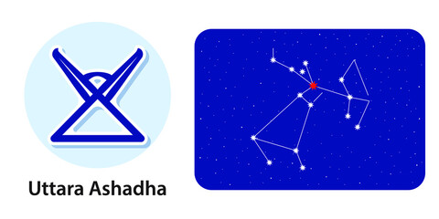

<
1st Pada: The first pada of the Uttarashada Nakshatra falls in the Sagittarius Navamsa ruled by Jupiter. Here the focus is on values and developing self-confidence. A lot of knowledge will be acquired.
2nd Pada: The second pada of the Uttarashada Nakshatra falls in the Capricorn Sign Navamsa ruled by Saturn. Sun, Jupiter, Mars, and Ketu are potent here. The focus here is on thoughts, desires, and strategies to achieve your goals.
3rd Pada: The third pada of the Uttarashada Nakshatra falls in the Aquarius Zodiac sign Navamsa ruled by Saturn. The focus here is on the accumulation of knowledge and items of creature comfort.
4th Pada: The fourth pada of the Uttarashada Nakshatra falls in the Pisces Star sign Navamsa ruled by Jupiter. Here the focus will keep shifting from the material to the spiritual aspect of things.
“second of the aṣāḍhā“ζ and σ Sagittarii
Lord: Surya (Sun)
Symbol : Elephant tusk, small bed
Deity : Visvedevas, universal gods
Stone: Ruby is your lucky stone.
Lucky numbers : 1, 3 and 8
Lucky Day:Thursday and Friday.
If a baby born in this nakshatra give her or him a name with starting letter “B” or “J”.
These persons should not live in West facing houses.
Persons born in Uttarashada nakshatram will have good taarabalam with following nakshatrams:
Rohini, Arudra, Pushyami, Magha, Pubba, Hasta, Swati, Anuradha, Moola, Purvashada, Sravanam, Satabisham, Uttarabhadra, Aswini, Bharani.
Indian zodiac: 26°40′ Dhanus – 10° Makara
Western zodiac 22°40′ Capricorn – 6° Aquarius
Uttarashadha Nakshatra
Characteristics male
Natives of the Uttara-Ashadha are born bright, popular, and multitalented, and generally excel in whatever they put their mind and soul into. They admire the good qualities of others and for this reason, they can easily gain admiration from their peers. They are also God-fearing but do not reveal their thoughts much, and thus sometimes it becomes difficult for people to understand them. They have an innate sense of what is right and wrong, and they strive to uphold the principles of dharma or righteous conduct. With the help of their sharp intellect and capacity for discrimination, they are willing to understand subtle nuances that others are unable to.Profession male
The male native of the Uttarashada Nakshatra should remember to be extremely cautious before indulging in anything controversial. Before he commits anything to anyone, whether on the personal or professional or business fronts, he should ensure the intention and integrity of the concerned person. After the age of 38, native can expect steady progress and success.Compatibility male
The male native of the Uttarashada Nakshatra generally experiences a favourable childhood but a lot of setbacks later in life, and some of them will be of such a nature that childhood has not prepared him for, so they may cause a lot of misery. It has been observed that between the ages of 28 and 31, there will be major changes in his family, although he will have a happy married life. He will be fortunate to have a very loving and caring wife. However, the health of the wife may be a major cause of concern.Health male
The male native of the Uttarashada Nakshatra faces many health problems in childhood. The main problem could be indigestion and resultant constipation. Cuts and injuries are also possible, so he needs to be careful while using sharp objects.Characteristics female
The female natives of the Uttarashada Nakshatra are not only stubborn but also prone to aggressive fits. They have an impulse to pick up the fights at the slightest provocation. However, as a rule, they are simple and uncomplicated people.Profession female
The female native of the Uttarashada Nakshatra are generally well-educated and prefer to become teachers or bank employees. She could even make expensive spiritual progress or become a renowned writer with support from the cosmos.Compatibility female
The female native of the Uttarashada Nakshatra has been observed to be unsatisfied with their married life. She gets disturbed by the separation from her husband for professional reasons, and because of this, she tends to turn towards spirituality.Health female
The female native of this Nakshatra will have gastric, hernia, or uterus problems. Otherwise, her health will be good.Uttarashadha Nakshatra Padas
1st Pada: The first pada of the Uttarashada Nakshatra falls in the Sagittarius Navamsa ruled by Jupiter. Here the focus is on values and developing self-confidence. A lot of knowledge will be acquired.
2nd Pada: The second pada of the Uttarashada Nakshatra falls in the Capricorn Sign Navamsa ruled by Saturn. Sun, Jupiter, Mars, and Ketu are potent here. The focus here is on thoughts, desires, and strategies to achieve your goals.
3rd Pada: The third pada of the Uttarashada Nakshatra falls in the Aquarius Zodiac sign Navamsa ruled by Saturn. The focus here is on the accumulation of knowledge and items of creature comfort.
4th Pada: The fourth pada of the Uttarashada Nakshatra falls in the Pisces Star sign Navamsa ruled by Jupiter. Here the focus will keep shifting from the material to the spiritual aspect of things.